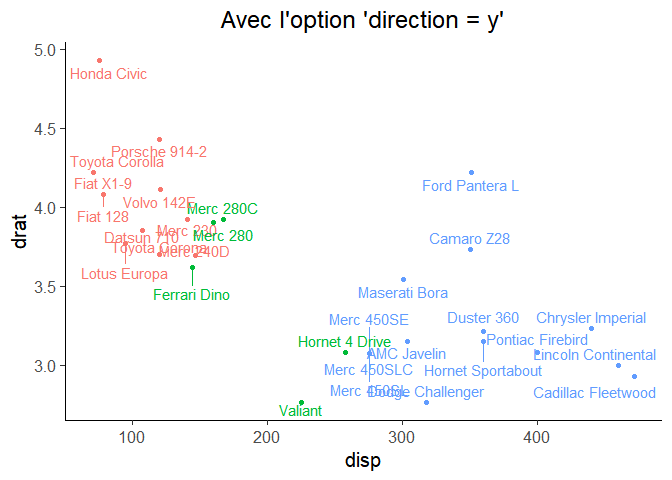
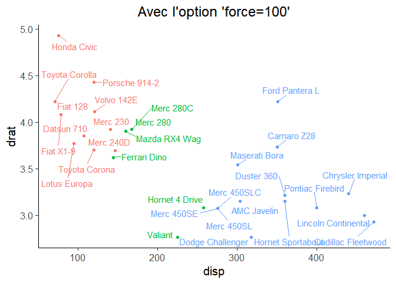
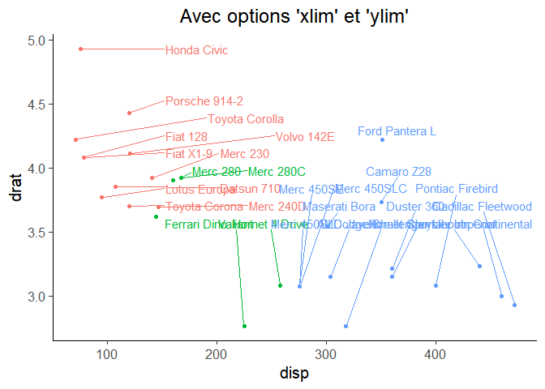
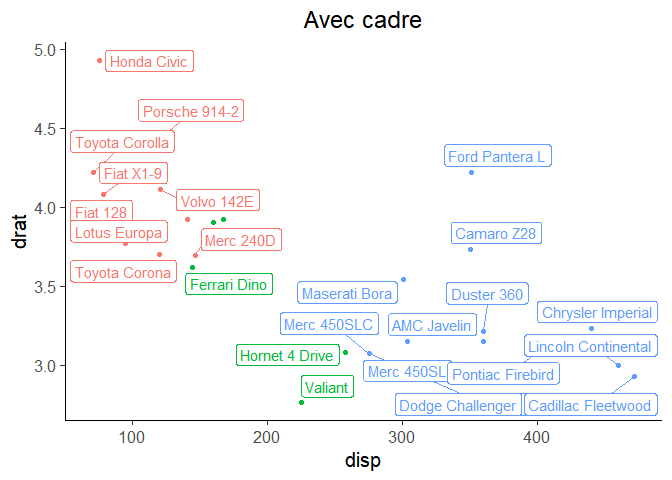

Introduction
Quand on a beaucoup de points sur un graphique ggplot2, on peut avoir des problemes de lisibilite des etiquettes qui se superposent. Le package ggrepel utilise un algorithme de repulsion pour regler ce probleme et il y a beaucoup d’options possibles, on en montre quelques-une ci-dessous.
library("ggplot2")
library("ggrepel")
library("dplyr")
# pour centrer les titres des graphiques ggplot2
theme_set(theme_classic(base_size = 15))
theme_update(plot.title = element_text(hjust = 0.5), legend.position="none")
set.seed(2019)
# les noms de lignes deviennent une colonne nommee "modeles"
mtcars2 = mtcars %>% tibble::rownames_to_column(var = "modeles")Application simple
Quelques options
# on repousse les etiquettes entre elles mais les points ne sont plus repoussoirs
gg_texte_padding = gg_base + geom_text_repel(point.padding = NA) +
ggtitle("Avec l'option 'padding = NA'")
# on impose la direction verticale aux etiquettes
gg_texte_vertical = gg_base + geom_text_repel(direction = "y") +
ggtitle("Avec l'option 'direction = y'")
# on augmente la force de repulsion
gg_texte_repousse = gg_base + geom_text_repel(force = 100) +
ggtitle("Avec l'option 'force=100'")
# avec des fleches marquees
gg_texte_fleches = gg_base + geom_text_repel(force = 100,
arrow = arrow(length = unit(0.02, "npc"),
type = "closed")) +
ggtitle("Avec des fleches")
# on impose une limite a ne pas franchir
gg_texte_limite = gg_base + geom_text_repel(ylim = c(3.5, NA),
xlim = c(150, NA)) +
ggtitle("Avec options 'xlim' et 'ylim'")
# avec des etiquettes encadrees
gg_texte_cadre = gg_base + geom_label_repel() + ggtitle("Avec cadre")
gg_texte_padding
gg_texte_vertical
gg_texte_repousse
gg_texte_fleches
gg_texte_limite
gg_texte_cadre